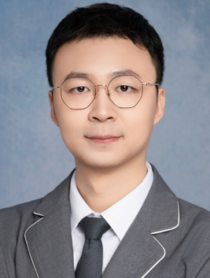

<td align="center" class="tbcolor10" colspan="2" valign="top">
<table border="0" cellpadding="0" height="100%" width="100%">
<tbody><tr><td align="right" height="35px" style="font-size:9pt">
<a href="javascript:window.close()" title="关闭本窗口">关闭窗口</a>｜<a href="print.asp?id=547906" target="_blank" title="打印本页内容">打印张贴版</a>    

</td></tr>
<tr>
<td align="center" height="500" valign="top">
<table border="0" cellpadding="4" cellspacing="0" height="100%" style="border-collapse: collapse;word-break:break-all;" width="86%">
<tbody><tr>
<td align="center" height="80px"><span style="font-family:方正小标宋简体;font-size: 25px;color: #C70E5C"><b><font color="black">讲座预告 | 香港中文大学博士后韩传亮学术讲座</font></b></span></td>
</tr>
<tr>
<td align="center" height="50px" style="font-size: 9pt"><font color="#808080">心理学院　2025/5/12 15:17:00</font><br/> 
<font color="#F8F8F8" style="font-size:9pt">（钟沛基 2022280095）</font></td>
</tr>
<tr>
<td height="300" valign="top">
<p class="MsoNormal" style="text-align: center;"></p><p class="MsoNormal"><b>讲座题目：</b><span lang="EN-US" style='font-size:12.0pt;
mso-bidi-font-size:11.0pt;font-family:"Times New Roman",serif'>Generation and
modulation mechanism of neural oscillations – from experiments to computational
models<o:p></o:p></span></p>
<p class="MsoNormal"><b>讲座时间：</b><span lang="EN-US">2025</span>年<span lang="EN-US">5</span>月<span lang="EN-US">15</span>日下午<span lang="EN-US">15</span>：<span lang="EN-US">00</span></p>
<p class="MsoNormal"><b>讲座地点：</b>深圳大学沧海校区致理楼<span lang="EN-US">C</span>座<span lang="EN-US">L3-1336</span></p>
<p class="MsoNormal"><b>主讲人：</b>韩传亮</p><p class="MsoNormal"><b>主讲人简介：<span lang="EN-US"><o:p></o:p></span></b></p>
<p class="MsoNormal">香港中文大学，博士后，本科毕业于中国地质大学（武汉）数学与物理学院，博士毕业于北京师范大学心理学部（认知神经科学与学习国家重点实验室<span lang="EN-US">&amp;IDG</span>麦戈文脑研究所），博士毕业后先后于中国科学院深圳先进技术研究院、香港城市大学和香港中文大学从事博士后研究工作，主要研究方向为大脑神经振荡的起源和功能机制及其在多种精神疾病早期筛查、诊断、治疗康复中的应用。近年来发表各类科研论文<span lang="EN-US">56</span>篇，其中以第一或通讯作者（含共一共通）在包括中科院<span lang="EN-US">top</span>期刊<span lang="EN-US">Neuron (in press)</span>、<span lang="EN-US">Plos Biology</span>、<span lang="EN-US">Translational Psychiatry (in press)</span>、<span lang="EN-US">NeuroImage(*3)</span>、<span lang="EN-US">Journal of Medical Internet Research</span>、<span lang="EN-US">Journal
of Affective Disorders</span>（<span lang="EN-US">*2</span>）在内的国际<span lang="EN-US">SCI</span>期刊发表论文<span lang="EN-US">32</span>篇，主持中国博士后科学基金两项（特别资助一项、面上资助一项），参与国家自然科学基金交叉学部重大项目一项（神经振荡调控），面上项目一项（<span lang="EN-US">Gamma</span>振荡机制）。现担任<span lang="EN-US">Brain-X</span>期刊青年编委、云端论脑<span lang="EN-US">-</span>神经科学青年学者论坛<span lang="EN-US">(</span>公益<span lang="EN-US">)</span>负责人，曾担任<span lang="EN-US">Frontiers in Neuroscience</span>和<span lang="EN-US">Frontiers in Human
Neuroscience</span>期刊的客座副主编，以及多个国际<span lang="EN-US">SCI</span>期刊的审稿人。<span lang="EN-US"><o:p></o:p></span></p><br/></td>
</tr>
<tr><td height="0" style="font-size: 9pt"></td></tr>
<tr><td align="right" style="font-size: 9pt">撰稿：俎亚男　审核：张丽  <br/> </td></tr>
</tbody></table>
</td>
</tr>
</tbody></table>
</td>
